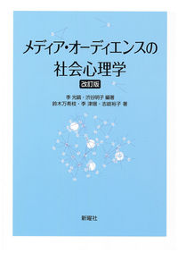
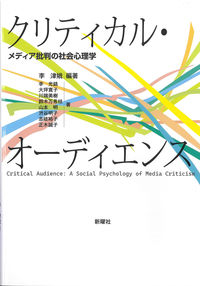
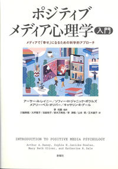
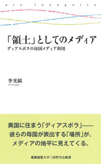
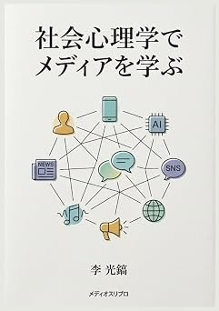
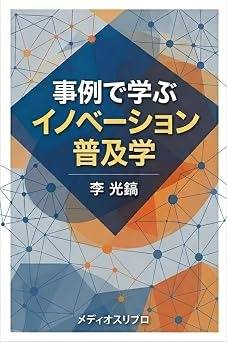

『メディア・オーディエンスの社会心理学〔改訂版〕』
スマホやSNSが日常化した現代の情報環境において、受け手（オーディエンス）がどのようにメディアを利用し、いかなる心理的影響を受けているのかを体系的に解明した専門テキスト。
ニュース・エンタメ利用
ジェンダーと表象
ステレオタイプ
ファン心理と暴力性
「個人の思考、感情、行為が、他者の存在（現実の、想像上の、あるいは暗示された他者）によってどのように影響されるかを説明し、理解しようとする試み」
— G. W. オルポートによる社会心理学の定義（Allport, 1968）
社会心理学とは、他者との関わりの中で生じる心の動きや行動を捉える学問です。 現代において、メディアはまさに無数の「他者」に出会い、観察し、つながる場――すなわち「他者の見本市」となっています。
私たちはなぜメディアを通じて他者と交わり、どのような影響を受けているのか。李光鎬研究会では、「メディア」と「社会心理学」の交差点に着目し、人々のメディア利用行動と心理的影響を実証的に探究しています。
どのメディア・コンテンツを、どれくらい、どのように利用しているのか？その行動パターンの実態を精緻に把握します。
なぜ私たちは特定のメディアを好んで見たり、逆に敬遠したりするのか？利用動機や対人関係の心理からアプローチします。
メディア接触によって、人々の態度・信念・購買行動・社会観はどう変わるのか？実証的な検証を行います。
質問紙調査や心理実験、統計分析（HAD/SPSS）、テキスト分析（CATMA/QDA）など、多角的なリサーチ手法と客観的な分析力を身につけます。
仮説設定から実験計画・Webデータ収集・統計解析まで、ゼミ生主体で取り組む実証研究
李光鎬研究会では、2025年度より「メディアの影響に関するオンライン実験」を研究活動の中心としています。 文献の検討にとどまらず、Web上で被験者に異なる実験刺激（記事のフレームや予告編映像など）を提示し、人々の心理・認知・行動意向がどう変化するかを客観的なデータに基づいて検証します。
毎年ゼミ生が共同で実験を遂行し、秋の三田祭（学園祭）にて研究成果を発表しています。
予告編の映像構成や提示情報が、受け手の鑑賞意欲・感情喚起・期待値形成に与える心理的効果をオンライン実験で解明。
同一の事象であっても、ニュース報道の切り口や強調フレームの違いによって受け手の態度や重要度認知がどう変化するかを実証分析。
慶應義塾大学 文学部 人間関係学系 教授
李光鎬教授の主な単著・編著・監訳書です。メディアとオーディエンスの心理的メカニズムを探究する理論的基盤となっています。

スマホやSNSが日常化した現代の情報環境において、受け手（オーディエンス）がどのようにメディアを利用し、いかなる心理的影響を受けているのかを体系的に解明した専門テキスト。

メディア批判の社会心理学
ネットやSNSで活発化するメディア批判や不信を社会心理学から実証解明。李光鎬教授は第1章「報道メディアを敵視し、軽蔑するオーディエンス」（敵対的メディア認知・メディアシニシズム）を執筆。

メディアで「幸せ」になるための科学的アプローチ
メディアの弊害ばかりに目を向けるのではなく、「メディアやエンタメがいかに私たちを勇気づけ、幸福感や感動、人と人とのつながりをもたらすか」に科学的に迫る新しい心理学アプローチの解説書。

ディアスポラの母国メディア利用（三田哲学会叢書）
グローバル化が進む中、異郷（ディアスポラ）に暮らす人々がなぜ、どのように衛星放送やインターネットを通じて母国メディアに触れ、アイデンティティや日常生活の空間を再構築しているかを実証的に考察した研究書。

慶應義塾大学 通信教育課程「社会心理学」テキスト
メディア利用と心理的影響を社会心理学の基礎理論から体系的に解説したテキスト。選択的接触（認知的斉合性）、ニュースの認知処理（プライミング・議題設定）、エンタメ享受の快楽原理（気分管理理論）などを平易に解き明かします。

普及学・イノベーション普及論テキスト
新しいアイデアや技術、製品、メディアコンテンツが社会の中でどのように広まり、浸透していくのかを解明。ロジャーズのイノベーター理論、S字普及カーブ、キャズム、オピニオンリーダーの役割を、具体的かつ身近な事例を通じて学ぶ実践的テキスト。
ゼミ生一人ひとりが関心を持つ「今」のメディア現象をテーマに、本格的なリサーチを行います。
TikTok、Instagram、YouTubeショートなどの短尺動画接触が、若者のアテンションや自己提示、消費行動に及ぼす影響を分析。
恋愛リアリティ番組、アイドルファンダム、K-POPカルチャーの受容過程や、推し活に伴う心理的充足とアイデンティティ。
SNS時代のニュース拡散、政治的党派性とエコーチェンバー、誤情報・デマの拡散要因やメディアへの不信感を科学的に検証。
インフルエンサーマーケティング、エシカル消費、ジェンダー表現と炎上広告など、生活者の心理に刺さる（あるいは反発を生む）広告効果。
仮説に基づいたWebアンケート調査や心理学実験の設計・実施方法を学びます。
初心者でも安心のレクチャー動画を通じて、相関・重回帰・分散分析・因子分析などを実践します。
SNSの投稿やインタビューテキスト、映像表現を体系的に分類・言語分析します。
合宿にて海外原典の輪読や親睦を深めます。新入ゼミ生を温かく迎えるスタート期間です。
オンライン実験デザインの精緻化・中間発表を実施。夜は花火やバーベキュー、語らいなどゼミ生同士の絆を深める恒例行事です。
4年生による集大成の卒論発表会。新入ゼミ生も参加し、次世代へと研究のバトンが引き継がれます。
身近な興味や社会現象から生まれた、ユニークで鋭い研究テーマの数々です。
どのような予告編の構成・情報提示が、鑑賞意欲や感情の喚起、期待値形成に寄与するのかをWeb実験により検証。11/12オープンゼミおよび三田祭にて結果を発表します。
同一のニュース事象であっても、切り口や強調フレームの違いによって受け手の態度変容や重要度認知がどう左右されるかを実証的に解明。
李光鎬研究会では、メディアと人間の心に関心を持ち、意欲的に探究できる新入ゼミ生を歓迎しています。
2025年度より、ゼミ生主体で仮説構築から実験設計、データ収集、統計分析を行い、三田祭にて研究成果を発表しています。
「映画の予告編の構成によって本編の視聴意向はどう変わるか」「ニュースのフレームによって受け手の態度がどう左右されるか」など、身近なメディアと心理の関連についてWeb実験を設計します。
実験刺激（映像や記事）の作成からWeb上でのデータ収集、統計ツール（HAD/SPSS）を用いた仮説検証まで一連の研究プロセスを経験し、客観的なデータに基づき事象を捉える思考力を養います。
2025年度は『ニュースのフレーミング効果』、今年度は『映画の予告編が視聴意向に与える影響』を検証。ゼミ生が共同で分析結果をまとめ、秋の三田祭にて学内外へ向けて発表を行います。
ゼミの活動内容や雰囲気を確かめてください。
志望動機、関心のあるメディアや研究テーマについての所定課題を提出します。
教員およびゼミ生による個人・グループ面接を実施します。
Web上で被験者に異なるメディア刺激（映像や記事見出しなど）を見せ、その後の感情や態度、行動意向の変化を客観的に比較・検証する研究手法です。
例えば2025年度は「ニュースの報道フレームによって受け手の態度がどう変わるか」、今年度は「映画の予告編の構成によって本編の視聴意向がどう左右されるか」を検証しました。
ゼミ生同士でチームを組み、刺激の作成からWebデータ収集、統計解析まで実践し、毎年秋の「三田祭」で成果を発表します。
ゼミ生の多くは未経験からスタートしています。 春学期の文献講読や教材、先輩ゼミ生のサポートを通じて、HADなどの使いやすい統計ツールから段階的に学びます。論理的に物事を考える姿勢があれば無理なく習得することができます。
文学部人間関係学系の専攻生を中心に広く受け入れています。他専攻からの応募可否や履修要件の詳細は、学部の入ゼミ要項をご確認いただくか、オープンゼミの際にお気軽にご相談ください。
各自の関心（動画配信、SNS、広告、ゲーム、ニュース、映画など）をもとに自由にテーマを提案できます。 教員との対話やゼミ内でのディスカッションを重ねながら、社会心理学的な研究課題へと練り上げていきます。
研究や文献の輪読、実験には真面目に取り組みつつ、普段の議論や合宿などは穏やかで協力的な雰囲気です。 各自の学生生活や課外活動とも両立しながら、無理なく継続して学べる環境を整えています。
4年生の春学期から各自で関心のあるテーマを設定し、教員との面談やゼミでの進捗発表を通じて研究計画を具体化します。秋学期にデータ収集や分析、執筆を進め、1月の卒論発表会で成果を報告します。
慶應義塾大学 三田キャンパス
〒108-8345 東京都港区三田2-15-45
ゼミに関するご質問やオープンゼミの見学希望など、お気軽にお問い合わせください。
e-office@keio.jp（李 光鎬）
入ゼミ生向けの情報や日常のゼミ風景を発信しています。